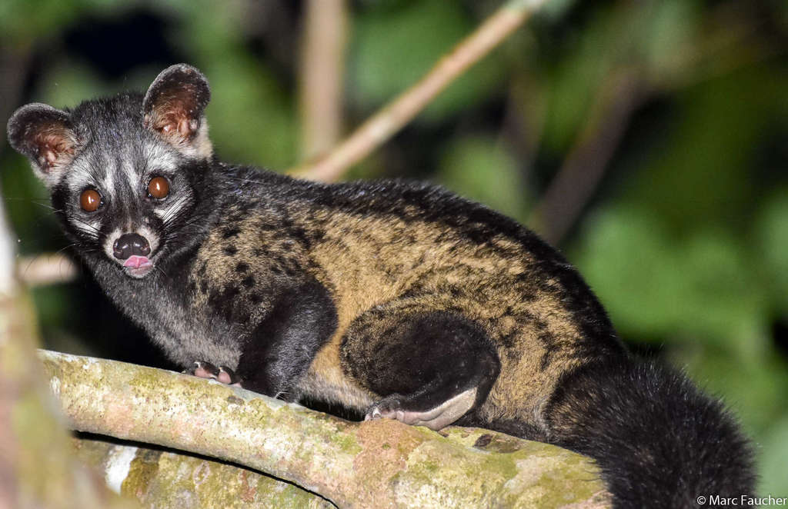
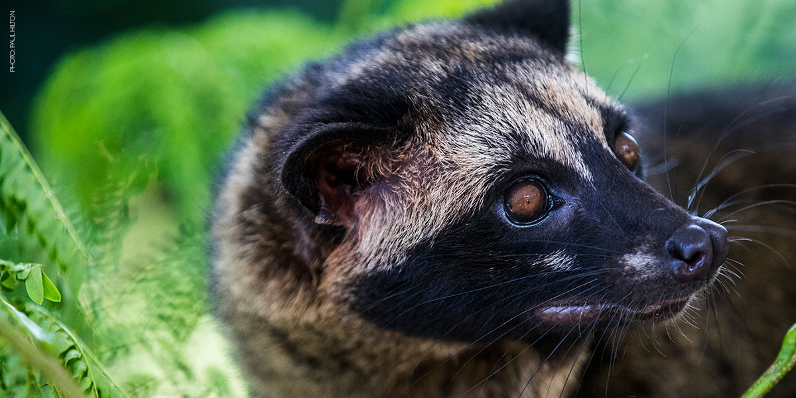

Paradoxurus hermaphroditus (Pallas, 1777)
Asian palm civet
Carnivora
Viverridae
Least Concern
The Asian palm civet's long, stocky body is covered with coarse, shaggy hair that is usually greyish in colour. It has a white mask across the forehead, a small white patch under each eye, a white spot on each side of the nostrils, and a narrow dark line between the eyes. The muzzle, ears, lower legs, and distal half of the tail are black, with three rows of black markings on the body.
Asian palm civets lead a solitary lifestyle, except for brief periods during mating. They are both terrestrial and arboreal, being active during the night with peaks between late evening and after midnight. During the day they usually rest in trees or inside rock crevices. These animals are expert climbers but less agile than other civets because their tail is non-prehensile.
Not available
Bangladesh, Bhutan, Brunei, Cambodia, China, India, Indonesia, Laos, Malaysia, Myanmar, Nepal, Singapore, Thailand, Viet Nam, Afghanistan, Pakistan.